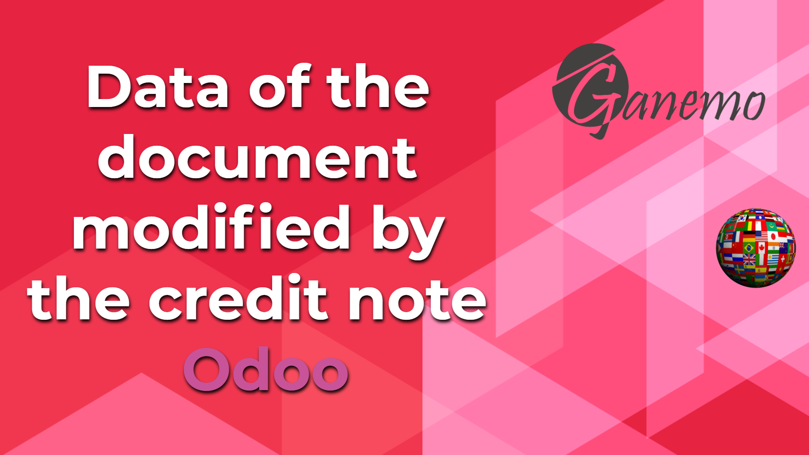

<section class="oe_container oe_dark">
    <div class="oe_row oe_spaced">
        <div class="oe_span8">
            
        </div>
        <div class="oe_span8">
            <span>
                Create in the credit notes (rectifying invoices), several fields that allow identifying the document that the credit or debit note is rectifying.
                It includes a relationship with an existing invoice in Odoo, and if it does not exist, the possibility of manually entering the values of "Date",
                "Series", "Type of document" and "Correlative" of the Source document.
                This does not depend on any location, so it applies to all countries, and it helps us to store additional information in the corrective documents.
                It is common that in many countries, credit note reports include information from the source document that is modified,
                and with this module you can cover that need.</span>
        </div>
    </div>
</section>
